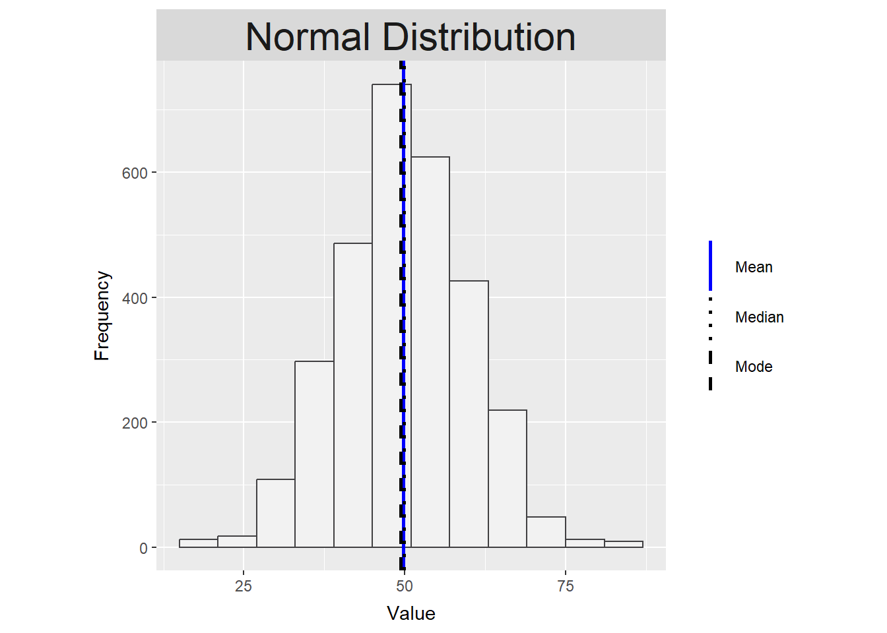
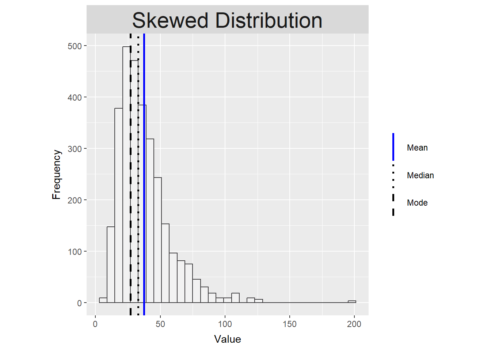
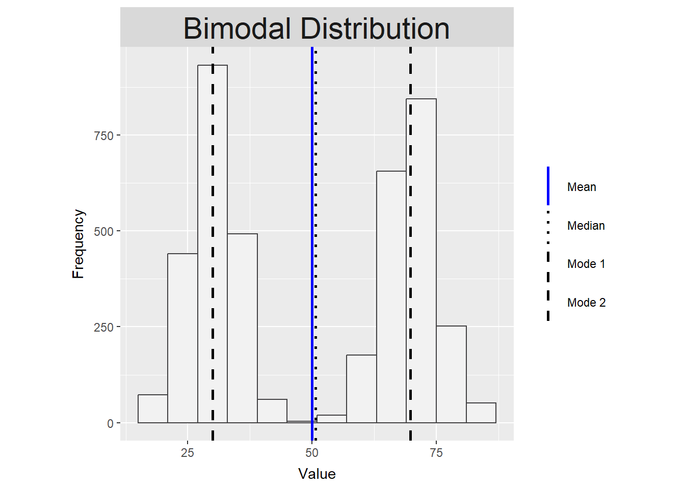

# Create each plot with the function, adding the relevant caption
create_histogram_plot(
eda_data %>% filter(dist_type == "Normal Distribution"),
"Normal Distribution"
)
Rose Megirian
Statistical analyses produce a wide range of outputs that can be difficult to interpret without a clear understanding of what they represent and why particular methods are used for different types of data. This guide walks through some of the common outputs you are likely to encounter, with the aim of building sufficient technical understanding of those outputs so that this insight, combined with deep contextual knowledge of the system, environment, or population being studied, can be applied to draw sound, evidence-based conclusions.
Visualisations are one of the most powerful tools in data analysis. They make patterns, relationships, and trends visible in ways that raw numbers alone often cannot. Plots like histograms, box plots, and scatter plots are particularly valuable during exploratory data analysis, helping to reveal the shape and spread of data, identify outliers, and assess the strength and direction of relationships between variables. This section explains how to read and interpret some of the most common plot types used in descriptive statistics.
A histogram displays the distribution of a variable by grouping values into intervals or categories, known as bins, and showing how many observations fall within each bin as a bar. The height of each bar represents the frequency of values in that range or category, making it easy to see at a glance where values cluster, how spread out they are, and whether any unusual patterns are present.
Histograms are commonly used during exploratory data analysis to understand the distribution of a variable before any formal modelling takes place. They help reveal how spread out values are, whether they cluster around a central point, whether there are unusually high or low values, and whether the distribution is symmetrical or skewed. This kind of early understanding of your data is important for informing decisions about which analytical methods are likely to be appropriate.
Histograms are also widely used during and after model fitting to examine residuals. The differences between observed values and the values predicted by the model. Most common analytical methods require that residuals are approximately normally distributed, and plotting a histogram of residuals is a straightforward way to assess whether this holds. It is worth noting that it is the residuals rather than the raw data that need to follow an approximately normal distribution — raw data can be skewed or non-normal and the residuals can still be approximately normal after a model is fitted. However, heavily non-normal raw data may be an early indication that this is worth checking carefully once a model has been fitted.
# Create each plot with the function, adding the relevant caption
create_histogram_plot(
eda_data %>% filter(dist_type == "Normal Distribution"),
"Normal Distribution"
)
create_histogram_plot(
eda_data %>% filter(dist_type == "Skewed Distribution"),
"Skewed Distribution"
)
create_histogram_plot(
eda_data %>% filter(dist_type == "Bimodal Distribution"),
"Bimodal Distribution"
)
Interpreting histograms
How you interpret a histogram is shaped by the type of data being displayed. The same plot can serve quite different purposes depending on what the data represents and what question you are trying to answer. Some common examples:
Continuous data: For continuous numerical data, the primary focus is on distribution shape, spread, and symmetry. Look at where the bars are tallest, this is where most values fall. A symmetrical bell-shaped curve suggests an approximately normal distribution, where values cluster evenly around a central point with the mean, median and mode all close together. A longer tail on one side indicates skewness. A right-skewed distribution has a tail extending to the right, meaning most values are lower with fewer very high values pulling the mean upward; a left-skewed distribution has a tail extending to the left, meaning most values are higher with fewer very low values pulling the mean downward. Two distinct peaks suggest the data may contain two subgroups with different underlying characteristics, known as a bimodal distribution, which is worth investigating further before proceeding with analysis. Bars sitting far from the main cluster may indicate outliers worth examining. For continuous data, distribution shape is particularly relevant when examining residuals after model fitting, as it informs whether the analytical methods applied are appropriate for the data.
Count data: For data that represents counts of something, such as the number of weeds per plot or insects per trap, interpretation is similar to continuous data in that you are looking at shape and spread, but a normal distribution is not necessarily expected. It is common for count data to follow a non-normal, right-skewed distribution, particularly when values are low or zeros are frequent in the dataset. The shape of the distribution is worth noting as it can indicate whether standard analytical approaches are appropriate or whether more specialised analytical methods may be needed to properly account for the nature of the data.
Ordinal data: For ordered categorical data, such as disease severity ratings or growth stage scores, the focus shifts away from distribution shape in a statistical sense. Since the intervals between categories are not necessarily equal, assessing normality or skewness is not meaningful in the same way as for continuous data. Instead, look at which categories are most frequent, how observations are spread across the ordered scale, and whether there is a clear dominant category or whether responses are spread widely across the range. This can provide useful insight into the general condition or stage of what is being measured.
Categorical data: For nominal categorical data with no inherent order, such as crop variety or treatment type, a histogram is essentially showing you which category occurs most frequently (the mode). Distribution shape in the sense of normality is not relevant. The focus is on the relative frequency of each category and whether the distribution of observations across categories is what you would expect given your study design.